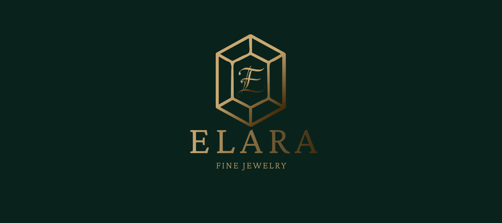
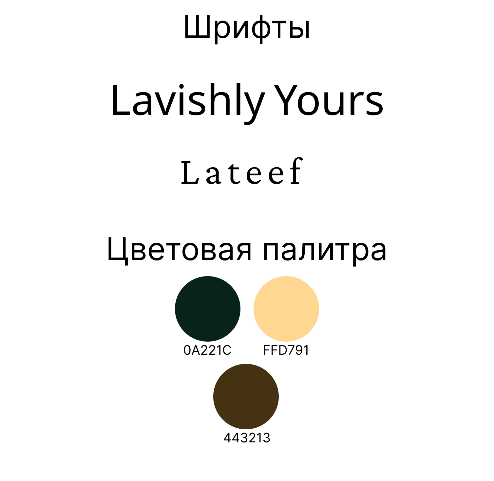
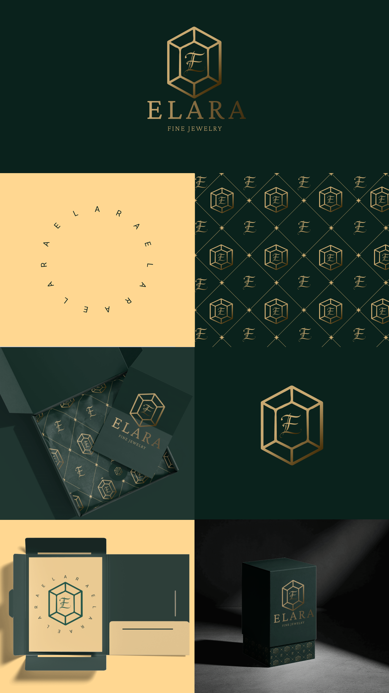

ELARA Fine Jewelry
Логотип и фирменный стиль ювелирного бренда ELARA.

- Клиент
- ELARA Fine Jewelry — ювелирный бренд
- Задача
- Разработать айдентику ювелирного бренда ELARA: логотип, знак, монограмму, фирменный паттерн, палитру и шрифтовую пару, а также показать применение на упаковке — коробке, визитках, обёрточной бумаге и печатях.
- Роль
- Графический дизайнер: логотип, знак-огранка с монограммой E, фирменный паттерн, палитра, шрифтовая пара, сборка мокапов упаковки.
Ювелирные логотипы обычно строят на самом изделии — кольце или бриллианте в три четверти. ELARA идёт от абстракции огранки: знак — это контур гранёного камня, собранный тонкой золотой линией одной толщины, а внутри него каллиграфическая монограмма E. Линейное, а не залитое исполнение важно принципиально — так знак можно тиснить фольгой по тёмному картону, где сплошная золотая заливка выглядела бы дёшево, а тонкая грань читается как ювелирная работа.
Из знака и монограммы собрана вся система. Монограмма и полный контур огранки, поставленные в ромбовидную сетку, дают фирменный паттерн для обёрточной бумаги и внутренней стороны коробок; тот же знак разворачивается в кольцевой вариант с бегущей по окружности надписью «ELARA» для печатей и наклеек. Палитра предельно классическая для люкса — тёмно-изумрудный 0A221C как фон, золотой FFD791 для линий и коричневый 443213 как переходный тон в градиентах золота. Шрифтовая пара: широкая засечная Lateef в логотипе «ELARA» и рукописная Lavishly Yours в монограмме и акцентах — контраст строгой антиквы и каллиграфии повторяет контраст огранки и вензеля внутри неё.


Айдентика построена так, что один знак-огранка раскрывается в целую систему — логотип, монограмму, ромбовидный паттерн и кольцевую печать — и держит люксовую подачу на любом носителе: тонкая золотая линия одинаково работает и тиснением на тёмной коробке, и паттерном на обёрточной бумаге, и печатью на визитке.